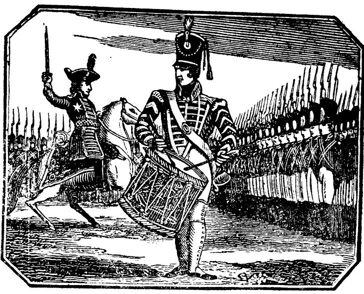
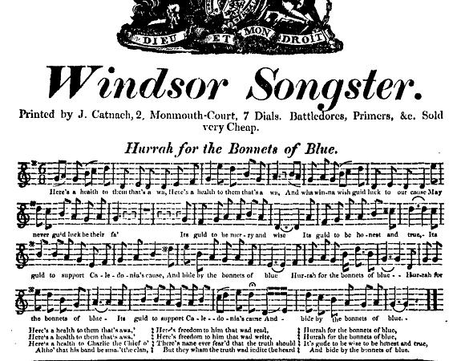
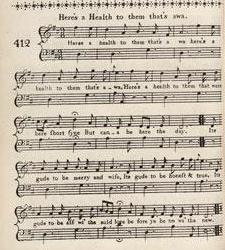
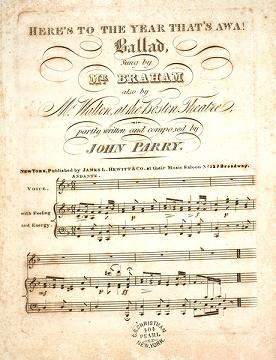

Here's a Health to them that's awa!
A la santé des absents!
The metamorphosis of a Jacobite song in five stages
L'évolution en cinq étapes d'un chant Jacobite
Tune - Mélodie N°1
"Here's the health to them that' awa!"
Scots Musical Museum Vol.5 N°412, 1796 and Jacobite Relics vol.1 N°31
Tune - Mélodie N°2
"Here's the health to them that' awa!" or "Hurrah for the Bonnets of Blue'!"
Broadside version
Tune - Mélodie N°3
"Here's to the Year that's Awa !"
John Dunlop's (?) traditional version
Variant of the foregoing
"Here's to the Year that's Awa!"
by John Parry
Sequenced by Ch.Souchon

|
To the tunes:
The following songs were put together to “demonstrate” how a Jacobite song from the times of the Glorious Revolution was gradually deprived of its subversive content by successive authors. All of them begin with the bacchanalian exhortation: “Here’s a health to (them/him) that’s away!” or a variant thereof: “Here’s to the year that’s away”. But the King referred to and the reason people have to find it “good to be aff” are hardly the same in Hogg’s and in Dunlop’s song (revisited by Parry) The tune N°1 , accompanying Burns's and Hogg's songs does not appear to have been printed before being set to a stanza of the ballad contributed by Burns to the Scots Musical Museum, vol. 5, 1796, No. 412. The music resembles that of "Kenmure's on an' awa" . Concerning the tune N°2 , the "Lester S. Lewy collection of sheet music" -searchable on line- has a copy of a ballad titled "For the Bonnets of Blue. A Ballad. " with the indication "Composed by Alexander Lee , published in Philadelphia by John G. Klemm (without date)...Sung with the most enthusiastic applause by Miss Clara Fisher & Mrs. Knight." In spite of Alexander Lee 's claim to composition, most of this text is taken from Robert Burns' poem "Here's a Health to them that's awa" (1793). It may be that Lee added the refrain and was perhaps responsible for the tune and the new title. Alexander Lee was an early 19th century composer and arranger. His version of the song was, according to the data base "Adelphi Performance Calendar", performed by Miss (Margaretta) Gaddon on 10th November 1828. To the tune N°3 and variant , the Lester S. Lewy collection of sheetmusic gives for the ballad "Here's to the Year That's Awa!" (without political double entendre!) the following information: "Composer, Lyricist, Arranger: Partly Written and Composed by John Parry . Publication: New York: James L. Hewitt & Co., No. 229 Broadway, n.d.." There are 3 Welsh musicians named John Parry: - John Parry, also known as "Parri Ddall" (Blind Parry) 1710-1782 - John Parry aka "Bardd Alaw" (The Bard of Alaw) 1776-1851 - John Orlando Parry, son of the precedent 1810 1879 But the site "Rampant Scotland" attributes a ballad whose lyrics are roughly identical to - John Dunlop (1755-1820). John Dunlop of Rosebank was Lord Provost of Glasgow around 1796. He also composed the well known air "O Dinna ask me gin I love ye!" |
A propos des mélodies:
Les chansons qui suivent ont été réunies pour montrer l'évolution d'un chant Jacobite datant de la "Glorieuse révolution" qui s'est trouvé dépouillé par des auteurs successifs de son contenu subversif. Tous commencent par une exhortation dont sont coutumières les chansons à boire "levons nos verres à l'absent (aux absents)!" ou sa variante "A l'année qui s'achève!". Mais le Roi auquel on pense et la raison pour laquelle on est honorablement absent sont loin d'être les mêmes chez Hogg et chez Dunlop (revisité par Parry). La mélodie N°1 qui accompagne les chants de Burns et de Hogg ne semble pas avoir été imprimée avant que Burns l'ait utilisée dans la ballade qu'il a insérée sous le N°412 dans le Musée Musical Ecossais, volume 5, en 1796. Elle ressemble à celle de "Kenmure's on an' awa" . A propos de la mélodie N°2 , la "collection de partitions" consultables en ligne de Lester S. Levy possède une ballade intitulée "Pour les bonnets bleus - Ballade" indiquant "Composée par Alexandre Lee, publiée à Philadelphie par John G. Klemm (sans date)... Chantée sous les applaudissements enthousiastes du public par Melle Clara Fisher et M. Knight. En dépit des affirmations d' Alexander Lee , l'essentiel de son texte est une citation du poème de Robert Burns "Here's a Health to them that's awa" (A la santé des absents!) (1792). Tout au plus Lee ajouta-t-il le refrain, et il est peut-être à l'origine du nouveau titre. Alexandre Lee est un compositeur et arrangeur de début du 19ème siècle. Sa version du chant fut donnée le 10 novembre 1828 par Margaretta Gaddon -selon la base de données "Calendrier Adelphi des représentations". Sur la mélodie N°3 et sa variante , la "collection de partitions" de Lester S. Levy donne, à propos de "A l'année qui s'achève" (chanson sans aucune allusion politique équivoque), l'information suivante: "Compositeur, librettiste, arrangeur: partiellement arrangé par John Parry Publication: New York: James L. Hewitt & Co., No. 229 Broadway, n.d.." On connaît 3 musiciens gallois du nom de John Parry: - John Parry, alias "Parri Ddall" (Parry l'Aveugle) 1710-1782 - John Parry alias "Bardd Alaw" (Le Barde d'Alaw) 1776-1851 - John Orlando Parry, fils du précédent 1810 1879 Le Site Internet "Rampant Scotland" attribue une ballade dont il fournit un texte pratiquement identique à: - John Dunlop de Rosebank (1755-1820) qui fut Lord Prévôt de Glasgow vers 1796. Il est aussi connu pour avoir composé l'air "Je ne sais pas pourquoi je t'aime". |
SONG N°1

|
"Here's a health to them that's awa!"
Hogg's Jacobite Relics Vol. 1 N° 31 The Glorious Revolution 1688 |
"Buvons à la santé de nos absents"
"Reliques Jacobites" de Hogg, Vol. 1 N° 31 La Glorieuse révolution, 1688 |
|---|---|
|
1. Here's a Health to them that's away. Here's a Health to them that's away. Here's a Health to him that was here yestreen But durst na bide till day. O wha winna drink it dry? O wha winna drink it dry? Wha winna drink to the lad that's gane, Is nane of our company. 2. Let him be swung on a tree, Let him be swung on a tree; Wha winna drink to the lad that's gane, Can ne'er be the man for me. It's good to be merry and wise, It's good to be merry and true, It's good to be af wi' the auld king, Afore we be on wi'the new. |
1. A la santé de nos absents!
A la santé de nos absents! A celui qui hier encore était présent, Mais est loin de nous maintenant! Il faut boire jusqu'à la lie! Il faut boire jusqu'à la lie! Celui qui ne veut boire à l'absent n'est pas Digne de notre compagnie. 2. Qu'il soit donc pendu haut et court! Qu'il soit donc pendu haut et court! Celui qui ne veut boire à l'absent, ce jour Car je le bannis à mon tour. On peut être sage et joyeux, Et même loyal et joyeux. Mieux vaut être au loin, mais près de l'ancien roi Qu'ici pendre au gibet, ma foi! |
|
"Has always been a popular air and one of those songs that Allan Ramsay altered into a love song for the sake of preserving the old chorus, which he has done in many instances and for which he can scarcely be blamed; because to have published any of the Jacobite songs at that day, was risking as much as his neck was worth. It appears to be a remnant. I took this copy from a set of manuscript songs belonging to the Honourable Miss Rollo."
Hogg in Jacobite Relics vol.1 |
"Cet air a toujours été populaire et ce chant est l'un de ceux qu'Allan Ramsay a transformé en romance pour en conserver l'antique refrain. Il l'a fait souvent et l'on ne saurait l'en blâmer, car il fut un temps où publier un quelconque chant Jacobite revenait à signer son arrêt de mort. Ce que j'ai ressemble à un vestige. Je tiens cet exemplaire d'un lot de chants manuscrits qui appartiennent à l'Honorable Mademoiselle Rollo."
Hogg in Jacobite Relics vol.1 |
SONG N°2
|
"Here's a health to them that's awa!"
by Robert Burns in support of Charles James Fox (1793) |
"Buvons à la santé de nos absents"
par Robert Burns en soutien à Charles James Fox (1793) |
1. Here's a health to them that's awa,
Here's a health to them that's awa, And wha' winna wish guid luck to our cause May never guid luck be their fa'. (bis) It's guid to be merry and wise, It's guid to be honest and true, It's guid to support Caledonia's cause, And bide by the buff and blue. [1] 2. Here's a health to them that's awa, Here's a health to them that's awa, Here's a health to Charlie the chief o' the clan, [2] Altho' that his band be sma'; (bis) May Liberty meet wi' success! May Prudence protect her frae evil! May tyrants and tyranny tine (=be lost) i' the mist, And wander their way to the devil! 3. Here's a health to them that's awa, Here's a health to them that's awa; Here's a health to Tammie, the Norlan' laddie [3], That lives at the lug (=ear) o' the law! (bis) Here's freedom to him that wad read, Here's freedom to him that wad write, There's nane ever fear'd that the truth should be heard But they wham the truth wad indite, 4. Here's a Health to them that's awa, An' here's to them that's awa! Here's to Maitland and Wycombe, let wha doesna like 'em [3] Be built in a hole in the wa'; (bis) Here's timmer (=timber) that's red (=well advised) at the heart Here's fruit that is sound at the core; And may he be that wad turn the buff and blue [1] coat Be turn'd to the back o' the door. 5. Here's a health to them that's awa, Here's a health to them that's awa; Here's chieftain M'Leod [3], a chieftain worth gowd, Tho' bred amang mountains o' snaw; (bis) Here's friends on baith sides o' the Firth, [4] And friends on baith sides o' the Tweed; [5] And wha wad betray old Albion's right, [6] May they never eat of her bread! |
1. A la santé de nos absents!
A la santé de nos absents! Quiconque n'embrasse pas notre cause. Que la chance ne lui sourie (bis) Soyons avisés mais joyeux, A la fois droits et vertueux, Que chacun s'efforce de servir l'Ecosse, Et soutienne les beige et bleu. [1] 2. A la santé de nos absents! A la santé de nos absents! Un toast au chef de notre clan, Charlie, [2] Même si c'est un petit clan; (bis) Pour que vive la liberté Prudents, sachons la protéger! Bannissons arbitraire et tyrannie, Nous les vouons aux gémonies! 3. A la santé de nos absents! A la santé de nos absents! A celle de l'homme du Nord, Tammie [3] Qui vit à l'écoute des lois. (bis) A la liberté d'expression! A la liberté d'opinion! Et nul n'a jamais craint la vérité Sauf quand celle-ci l'accusait. 4. A la santé de nos absents! A la santé de nos absents! A Maitland, Wycombe, que leurs ennemis [3] Demeurent emmurés à vie! (bis) Voilà de quoi chauffer nos coeurs! Des fruits sains et pleins de vigueur! Quiconque tourne son plaid beige et bleu [1] Quitte immédiatement ces lieux! 5. A la santé de nos absents! A la santé de nos absents! Au chef McLeod [3], qui vaut son poids d'or Même exposé aux gels du Nord. (bis) Aux amis des deux bords du Firth, [4] Et des deux rives de la Tweed [5] Mais ceux qui contestent les droits d'Albion, [6] N'aient d'elle le moindre quignon! |
|---|
|
The political song N°2 above, which is found partly in Cromek's "Reliques", 1808, 429, entitled "Song patriotic"-unfinished, whose MS is in the British Museum, was composed by Burns in 1793, when he became "infected" by the ideas of the French Revolution. He sent it to Captain William Johnston, the editor of the new "Edinburgh Gazetteer", who had started the periodical on ' progressive' principles.
Johnston was subsequently charged with a treasonable conspiracy, and imprisoned. At this time Burns was suspected of holding opinions hostile to the Constitution, and it was alleged that he had proposed the following toast at a public meeting— ' Here's the last verse of the last chapter of the last Book of Kings.' "Here's a health to them that's awa" is founded on the Jacobite ballad above (Song N°1). Source:"Complete Songs of Burns online book" Later on this pamphlet inspired the broadside text (song N°3) titled "Hurrah for the Bonnets of blue" . [1] "Buff and blue" : were the colours that were particularly associated with Charles James Fox, The verses in italics are missing in the broad side version, which has instead two additional verses repeating "Hurrah for the Bonnets of blue" and "Its good to bide by the Bonnets of blue".
[2]
Charlie
: Charles James Fox: In 1792 Fox succeeded in passing the
Libel Act
which restored the right of juries to decide whether an allegedly libellous article that had been published, constituted libel and whether or not a defendant was guilty of libel. The next year, Fox declared himself a supporter of the French Revolution in 1789 and continued to praise the French achievement even after war with Revolutionary France had broke out in 1793. He protested against the suppression of the Habeas Corpus in wartimes.
|
Le chant politique N°2 ci-dessus, que l'on trouve, en partie, dans les "Reliques de Cromek" , 1808, 429, sous le titre "Chant patriotique inachevé" et dont le manuscrit se trouve au British Museum, a été composé par Burns en 1793, quand celui-ci commençait à subir la "contagion" des idées de la révolution française. Il envoya ce texte au capitaine William Johnston, l'éditeur du nouveau périodique, l'"Edinburgh Gazetteer", qui s'appuyait sur des principes de progrès.
Johnston fut alors poursuivi pour atteinte à la sûreté de l'Etat et emprisonné. C'est alors que Burns fut inquiété pour ses opinions qu'on disait hostiles à la Constitution et c'est ainsi qu'il fut même accusé d'avoir proposé le toast suivant, lors d'une réunion publique: "Ceci est le dernier verset du dernier chapitre du dernier Livre des Rois". "A la santé des absents" se fonde sur la ballade Jacobite présentée plus haut (chant N°1). Source:"Complete Songs of Burns online book" Plus tard, ce texte inspira la "broadside" (chant N°3) intitulée " Hourra pour les Bonnets bleus ". [1] "Les beige et bleu" : les couleurs du parti de Charles James Fox. Les couplets en italiques n'existent pas dans la version "feuille volante" qui les remplace par "Hourra pour les Bonnets bleus" et "Soutenons les Bonnets bleus!" répétés plusieurs fois. [2] Charlie : Charles James Fox : en 1792, Fox réussit à faire adopter le "Libel Act" qui rétablissait le droit d'appréciation du jury en matière d'écrits séditieux et l'autorisait à décider si un prévenu relevait ou non de ce chef d'accusation. L'année suivante, Fox se déclara un adepte de la Révolution française de 1789 et continua d'approuver les options prises par ses voisins jusqu'à ce que la guerre soit déclarée à la France en 1793. Il protesta alors contre la levée de l'Habeas Corpus en temps de guerre. [3] Tammie, the Norman laddie, Chieftain McLeod : Thomas Erskine (1750 - 1823) : "Ce fut un politicien honorable, un fervent défenseur de la liberté et un avocat et orateur incomparable." (Dictionnaire des Biographies Nationales). Son ami Burns l'appelle, quant à lui, "un Ecossais plein d'esprit" (en utilisant le dialecte Scots). Maitland et Wycombe sont d'autres partisans de Fox. [4] les deux bords du Firth : Les Hautes et Basses Terres d'Ecosse. (5) les deux rives de la Tweed : Ecosse et Angleterre. (6) Albion : La Grande Bretagne |
SONG N°3

Broadside ballad (with sheetmusic) from the Bodleian Collection
|
Song N°3: in this song as well as in the song on next page,
"Bonnets of Blue"
in the title applies to Scottish soldiers in the regular forces and no longer to the Jacobite Army.
The present son, published as broadsides between 1813 and 1860 titled "Hurrah for the Bonnets of Blue" is a shortened version of the long poem N°2, that Burns published in 1793 in support of his friends. In all copies of the broadside song, "bide by the buff and blue" in Burns's poem is replaced by the Jacobite reminiscence "And bide by the Bonnets of blue". Furthermore, on two of the most recent broadsides of the Bodleian Collection (1828/29 and 1840/66), "Chief Charlie" is replaced by "Chief Donald" , maybe because it was fellt as an explicite reference to the 1745 uprising. But the double entendre about "freedom to them that would read.." and "None ever feared that the truth would be heard, but they whom the truth would indict" - which alludes to the political commitments of the persons quoted in Burn's poem, as well as the mention of the "support of Caledonia's cause"-, are kept unchanged. |
Chant N°3: Ce chant et celui de la page suivante ont des titres comportant l'expression
"Bonnets bleus"
appliquée aux Ecossais de l'armée régulière et non plus à l'armée Jacobite.
Le présent chant, publié sous forme de feuilles volantes entre 1813 et 1860 et intitulé " Hourra, pour les bonnets bleus " est une version réduite du long chant N°2 ci-dessus, publié en 1793 par Robert Burns en soutien de ses amis politiques. Sur toutes les feuilles volantes où le présent chant est reproduit, "vive les beige et bleu" du poème de Burns est remplacé par la réminiscence Jacobite "Vive les Bonnets bleus". De plus, dans deux des plus récentes feuilles conservées à la "Bibliothèque Bodléienne" d'Oxford et datant de 1828/9 et 1840/66), le "Chef Charlie" est remplacé par le "Chef Donald" , peut-être parce qu'on voyait là une référence trop voyante aux événements de 1745. Mais les sous-entendus à propos de "la liberté d'expression et d'opinion" et la phrase "nul n'a jamais craint la vérité, si ce n'est ceux qu'elle accuse", qui se rapportent sans aucun doute aux engagements des personnes citées dans le poème, ainsi que l'appel au "soutien à la cause de l'Ecosse", ont été conservés intacts. |
SONG N°4
|
"Here's a Health to them that's awa"
Scots Musical Museum Vol. V N°412 p 426, 1796 - Ascribed Robert Burns |
"A la santé de nos absents"
Scots Musical Museum Vol. V N°412 p 426, 1796 - Attribué à Robert Burns |
1.'Here's a health to them that's awa
Here's a health to them that's awa, Here's a health to them that were here short syne But cana be here the day. 2. It's gude to be merry and wise, It's gude to be honest and true, Its gude to be aff wi' the auld love Before ye be on wi' the new.  SMM page 426 |
A la santé de nos absents!
1. A la santé de nos absents! Si proches il y a peu de temps, Mais si loin à l'instant présent. 2. L'esprit ouvert, l'âme sereine, Sachons être honnêtes et droits, Rompons avec l'amour ancienne Avant d'aimer en d'autres bras. |
|---|
|
Though his name is not mentioned, the short song N°4 published in the "Scots Musical Museum" ( in 1796) under the title
"Here's a Health to them that's awa"
is ascribed to
Robert Burns
. It contains a sentence "It's good to be off with the old love, before yo e on with the new" that may be understood as prompting to turn over the leaf of Jacobitism -Prince Charles Edward Stuart died on 31st January 1788.
|
Bien que son nom ne soit pas mentionné la courte mélodie "
A la santé des absents!
" (chant N°4) publiée dans le "Musée Musical Ecossais" (vers 1796) est attribuée à
Robert Burns
. Elle contient la phrase "Rompons avec l'amour ancienne avant d'aimer en d'autres bras", qui peut être comprise comme un invitation à tourner la page du Jacobitisme. -le Prince Charles Edouard Stuart venait de décéder le 31 janvier 1788.
|
SONG N°5
|
"Here's to the year that's away"
by John Parry after John Dunlop (c. 1796) |
" A l'année qui s'achève"
par John Parry d'après John Dunlop (vers 1796) |
Here's to the year that's awa',
Let us drink it in strong and in sma', And here's to each bonnie young lassie we loved In the days of the year that's awa'. (ter) Here's to the friends we can trust When the storms of adversity blaw, May they live in our song and be nearest our hearts, Nor depart like the year thats awa'; Here's to the soldier that bled, And the sailor who bravely did fa'; Their fame will still live tho' their spirits are fled, On the wings of the year that's awa'. Here's to the land of our birth, To the King, who's the pride o' us a' May he ever be blest and ne'er look with regret, On the days o' the year that's awa'.  John Parry's Ballad
|
Buvons à l'an qui s'achève
Ce verre qu'avec moi chacun lève. A la santé de plus d'une charmante enfant Que nous aimâmes un an durant. (ter) Et buvons à l'amitié Qui nous soutient dans l'adversité! Puisse-t-elle habiter en nos coeurs et nos chants, Ne point passer comme passe l'an! Aux soldats versant leur sang! A nos marins sur nos bâtiments ! Leur gloire restera, même si leurs esprits Sur les ailes de l'an mort s'enfuient. Buvons à notre patrie! Au roi, fierté de notre pays! Dieu le bénisse et fasse qu'il n'ait le regret De l'année qui vient de s'achever! |
|---|
| Here is another song, titled "Here's to the year that's away" composed around 1796 by the Lord Provost of Glasgow, John Dunlop , though very similar, evokes sailors, soldiers and King but, in acknowledgment of King George III's full support of the war effort, is bare of any subversive contents. | Voici un autre chant, intitulé "Buvons à l'année qui s'achève!" , composé vers 1796 par le Lord Prévôt de Glasgow, John Dunlop , bien que très similaire, s'il parle de marins, de soldats et du Roi, n'a, compte tenu du complet soutien apporté par le souverain à l'effort de guerre, aucun contenu subversif. |